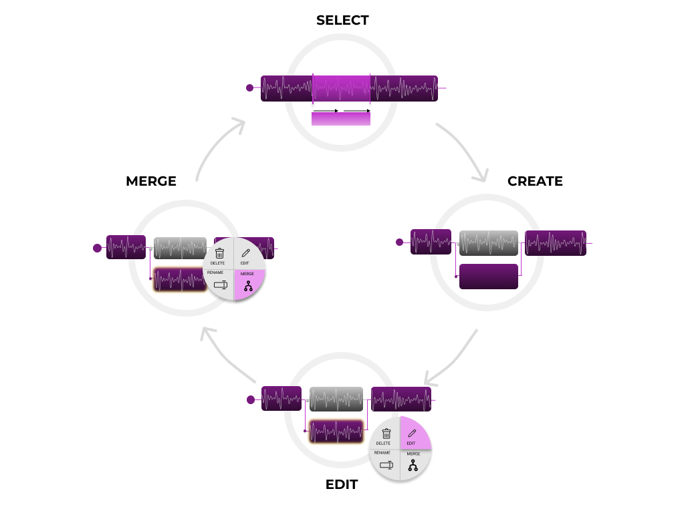

MusicHub

MusicHub is a Design of Interactive Systm project that consists in the design of a possibile new tool for music softwares. In particulare, MusicHub is a tool that allows users to divide a track in multiple branches to experiment with different versions of the same track, experimenting with different sounds, effects and results. We provide a user-friendly version control tool that helps music professionals to find the perfect version of their tracks. Our tool allows users to create, delete, modify and merge different branches inside a track. Each branch represents a variation of the original track, so the user can test different effects, notes or any modification without losing any previous settings or configurations. Branches can be reordered, hidden if inactive and merged to obtain the final version of the new hit.
We wanted to tarket people working on post-production & mixing, who likes to experiment with sound, usually records multiple versions of the same track and test different effects. During our design journey we had to define some personas and in particular an extreme character that would benefit from the use of our tool. So let me introduce you Alice, Bob and Kate.
Firstly, me and my group mates performed some story interviews with music software experts. I had the chance to interview a music producer and a band member. Those interviews were very usefull to understand the software and all the breakdowns or possibile problems each different music software have. We gather some experience and those guided our first design process. We identified some ideas during a brainstorming session, and after that we defined both some design dimensions and a full design space to stretch our ideas to the max of the efficacy. We wanted something really interactive ut yes simple and powerfull. After that, we created some scenarios of use in real life, involving the aforementioned Personas in a real-life context. This scenario was later transformed into a storyboard and a videoprototype. We had so much fun doing this videoprototype in a old fashion way with paper and fake interactions. Hope you enjoy it!